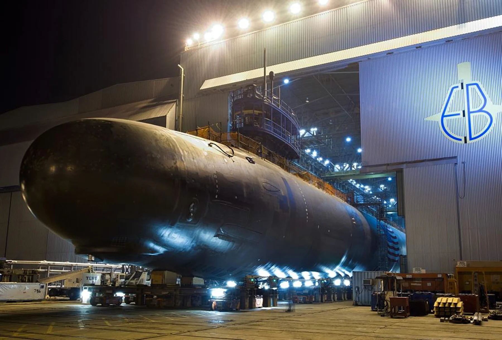

01INDUSTRY EXPERIENCE / SUMMER 2026
Engineering for
the real world.
General Dynamics Electric Boat
Propulsion Plant and Fluid Systems
Design & Engineering Intern · Groton, CT

- Resolved hardware thread interference by redesigning adapter geometry with GD&T and specifying new O-ring parameters, preventing leakage and enabling critical testing.
- Dispositioned fluid-pipe routing nonconformances by evaluating geometric deviations and verifying zero impact to vessel acoustic signature, avoiding part rejection.
- Identified a legacy O-ring thermal-rating mismatch with MIL/AS586 specs; issued a conditional Use-As-Is disposition requiring downstream replacement for NAVSEA compliance.
- Supported manufacturing transition of an insourced fluid component by observing first-run fabrication and verifying production readiness.
- Audited 40+ manufacturing Excel sheets against Teamcenter baselines and Engineering Change Notices to verify configuration compliance.
- Corrected gage-valve orientation and updated schematics to ensure NAVSEA compliance across future COLUMBIA-class hulls.
DESIGN → VERIFICATION → MANUFACTURINGJUN — AUG 2026